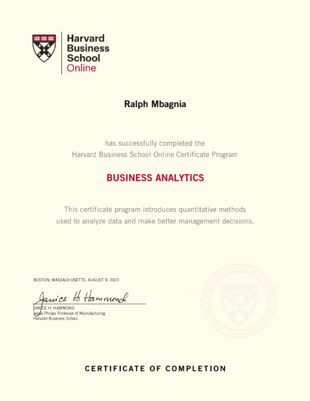
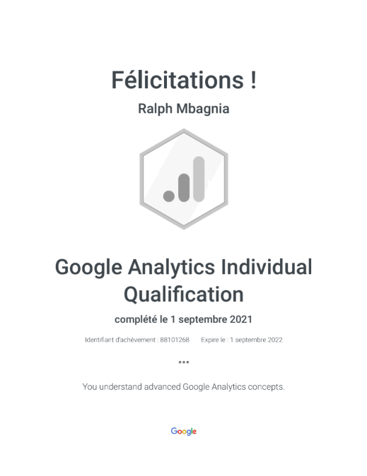
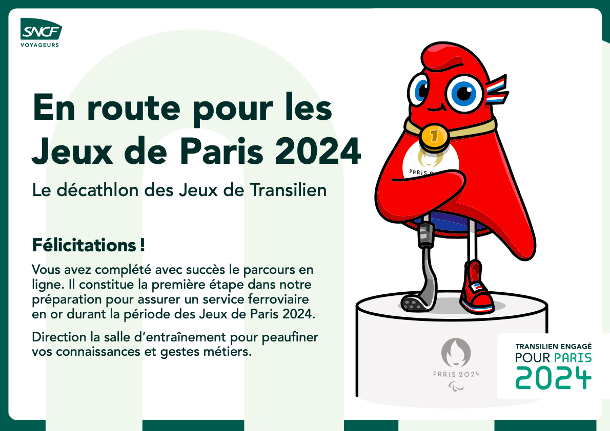
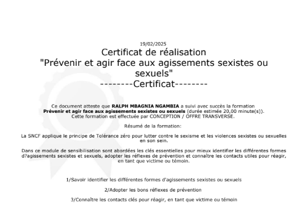

Certifications & Formations






Profil hybride Business & Data (Marketing Digital – Data & IA).
Ambition : accompagner les métiers en transformant les données en leviers d’action
pour la prise de décision stratégique.
Visualisation et suivi des indicateurs clés de performance (visites, visiteurs uniques, pages vues). Analyse de l’audience des services d’Information Voyageurs pour détecter les tendances, mesurer l’impact des événements (grèves, canicule, perturbations) et piloter la stratégie d’information.
Voir le projet ↗Conception d’un tableau de bord intelligent basé sur l’IA et le Machine Learning pour aider les restaurateurs à réduire le gaspillage alimentaire. Optimisation des stocks et réduction de 20 % des coûts d’achat, avec visualisations interactives et reporting automatisé.
Voir le projet ↗Refonte complète du site vitrine du cabinet SGDS International. Amélioration UX/UI, optimisation SEO et performances (lazy loading, compression, mise en cache) pour renforcer la visibilité, la réactivité et l’image professionnelle de l’entreprise.
Voir le projet ↗